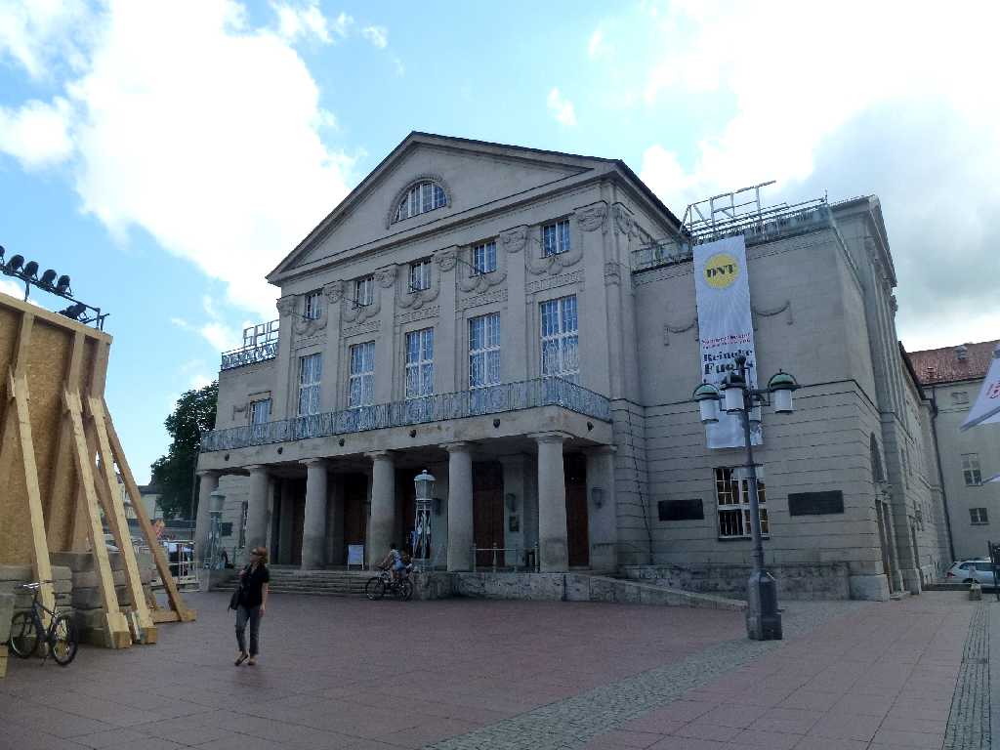
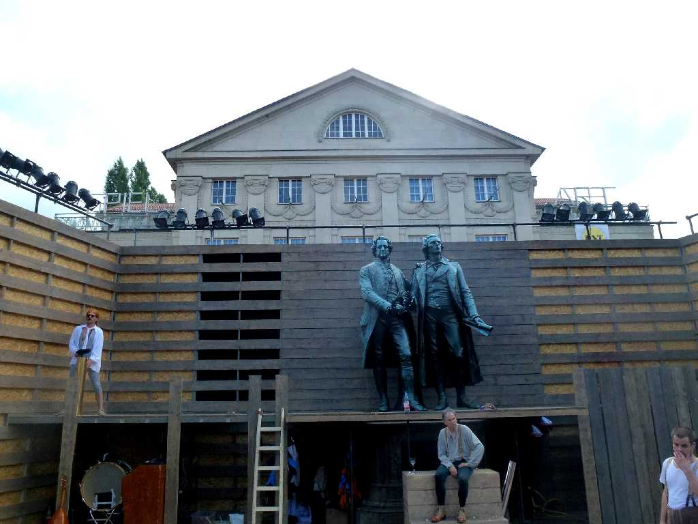
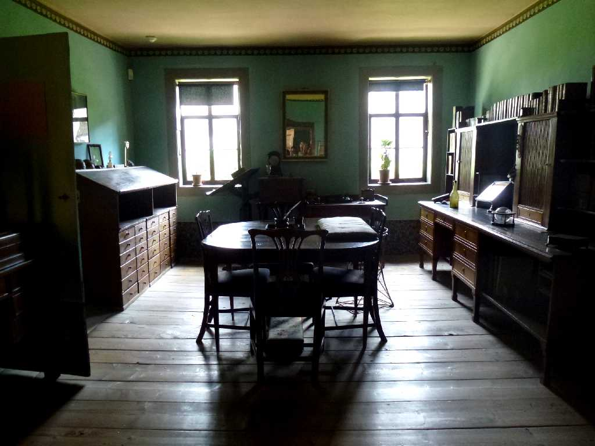
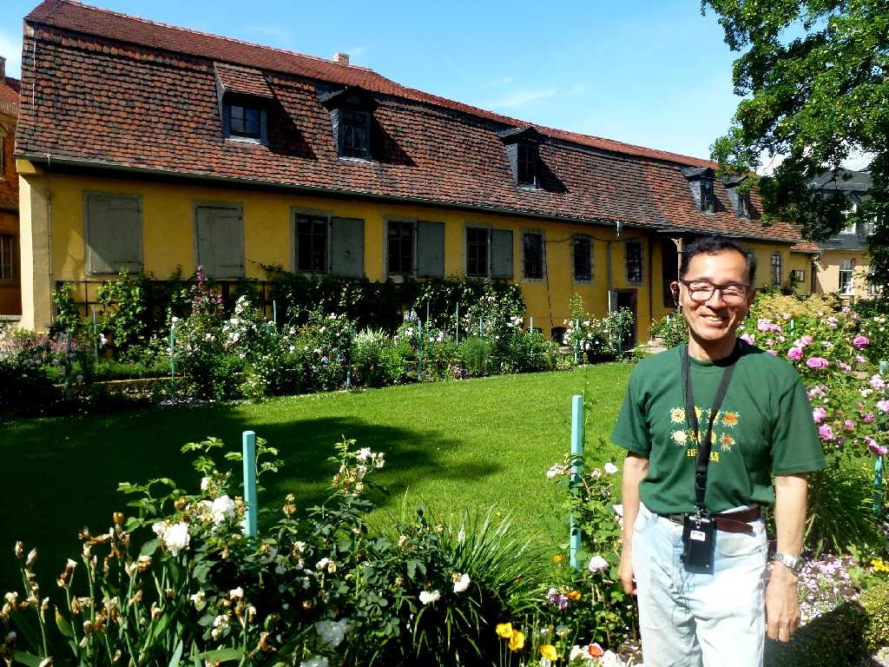
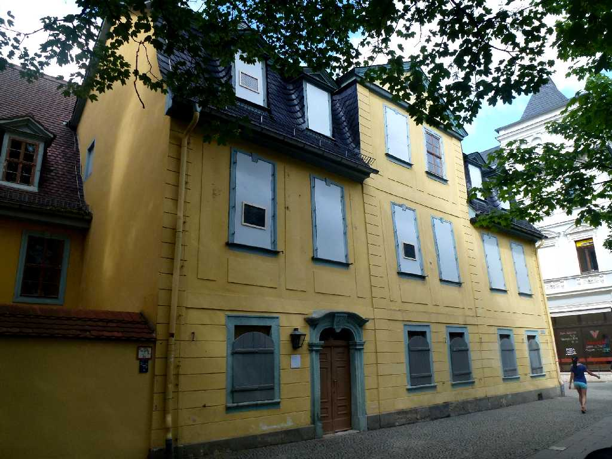

Deutsches Nationaltheater Weimar
帝政ドイツが崩壊した後ワイマール憲法が制定された憲法制定議会が開催された国立劇場

Goethe und Schiller
国立劇場前のゲーテとシラーの像 イベント会場設置工事内に入れてもらい撮影

Goethes Wohnhaus
ゲーテ２６歳のときワイマール公国のカールアウグスト公に招かれ以降８２歳の亡くなるまで暮らした家

June 11 2014 Garten Goethes Wohnhaus
ゲーテを慕ってシラーやリスト等の名だたる文化人が集まり人口５,０００人の小国の首都はヨーロッパ文化芸術の中心都市となった

Schiller Wohnhaus